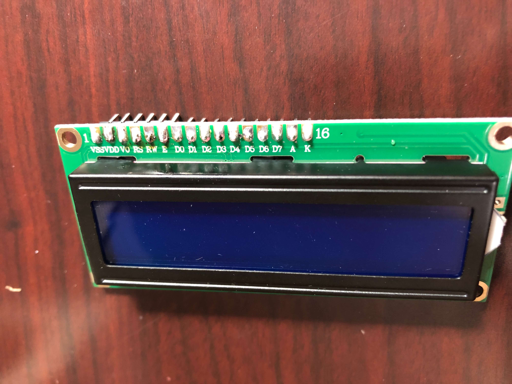

Final Project Documentation
Table of contents:
-Demo Video
-Memory Alarm Website
-Introduction
-Project Development
-Programming
-Alarm (Firebase)
-Time (NTP Client)
-Memory Game
-Combining Everything
-Future Goals
-Downloads
To set the alarm from a website via Firebase from anywhere with internet access, here's the link.
Initial Final Project Proposal: Simon Says Alarm Clock
June 23, 2020
Proposal: I have a bit of trouble waking up in the mornings (to the point where I usually have to set several alarms five minutes apart to even wake up). I was thinking of designing an alarm clock that would work like those old Hasbro Simon Says games, forcing me to use my memory to turn off the alarm sound. It could use 4 different color LED lights that could light up in a specific pattern with specific sounds, and I would have to repeat the pattern to turn off the alarm.
3D Modeling
July 13, 2020
Today I modeled the enclosure of my Simon Says alarm clock in Fusion 360! This file would be laser-cut on either plywood or acrylic. Here's my process in designing the alarm clock box.
First, I drew a sketch by hand of my alarm clock. I intend to buy light-up arcade buttons in 4 different colors which have a diameter of 30 mm to use as the Simon Says buttons. These will be located on the top of the clock. Then I will use an LCD display to show the time and mount it on the front of the box. Finally, both the left and right sides of the clock will have speaker grills for the Piezo buzzer.

I used Makercase to design a 120x120x120 mm box with finger joints and then imported that .stl file into Fusion 360 to make some modifications. I started with designing the top of the box by sketching out holes for the arcade buttons to fit into and then extruding the surrounding area.
The next side I designed was the front of the box with the LCD display. Victoria helped me by measuring her own LCD display with a caliper and writing down the dimensions for me, which I used in sketching out the display and mounting holes.

Lastly, and probably the most difficult, was designing the speaker grills. I ended up sketching four hexagons and using the rectangular pattern feature to spread the pattern across the entire diameter of the circle where I wanted the speaker grills. This took a lot of trial and error, and my Fusion 360 actually crashed twice because of how complex the pattern was. Luckily, I finally managed to get the right dimensions of the hexagons and the space between hexagons.

I extruded the honeycomb pattern and the space around the speaker cut-out to finish that side. Then, I made that side into a component. I copied and pasted the component for the opposite side. And after extruding the back and bottom of the alarm clock box without making any modifications, I finished my preliminary design!
Download my 3D model file here!
Edit: Initially, I exported the .dxf file from Fusion 360 but found that this would only export my sketches, including my sketch lines that I didn't want. To fix this, I had to create a sketch on the xy-plane and project all of the lines of my sides onto the sketch, then I saved that sketch as a .dxf. This seemed to solve the problem!
Hardware/Circuit
July 28, 2020
Most of my progress on my final project this week was hardware-wise. Since my buttons and LCD display for my final project finally came in the mail, I was able to solder the components for my final project this week. I've never soldered before, so I was very nervous when handling the soldering iron and solder. However, after watching several YouTube videos on how to solder, I finally gathered up the courage to solder my components.
I started with the LCD display. The display came with 16 pins that I had to solder onto the 1602 LCD display. To do this, I first inserted the pins into the sockets on the display and propped it up on the table to solder it. Since I was using 60/40 solder which contains lead, I was really worried about the health risks, so I ended up wearing safety googles, gardening gloves, and a face mask while soldering, and I set up a table outside so that there would be good circulation while I was soldering. You can never be too safe! When I started to solder, I realized that I should have followed Victoria's advice and gotten a pointed tip instead of using the included chisel tip in the box since it was really hard to precisely press the soldering iron onto the joint since the tip was so big.

When soldering, I made sure to clean the soldering iron with the sponge and tin it occasionally. To melt the solder, I pressed the soldering iron onto the joint and pressed the solder to the other side of the joint rather than the iron. Although my soldering does not look perfect, I checked the connections with my multimeter afterwards and made sure that the LCD display worked by using some sample code from the SunFounder website.

Next, I soldered wires onto the arcade button terminals. Since the laser-cut parts that I sent to be printed arrived in the mail, I was able to screw in the buttons to allow for the buttons to stay in place better while I was soldering. Before soldering, I twisted the wires into the terminals to make better connections. I also connected the ground wires for the switch and LED in each button to minimize the amount of wires coming out from the buttons. This was easier than the LCD display to solder since the chisel tip was not too big to perform the task, but I realized that sometimes I wasn't careful with my wires and accidentally touched them to the hot metal rod while I was soldering the joints. As a result, some of the rubber burnt off, but the metal wire was only exposed on one wire, so hopefully this will not pose any problems.

With my LCD display soldered, I was able to finish adding it to my original circuit with my Huzzah board and buzzer. In order to allow for the adjustment of the contrast on the LCD display, I hooked a potentiometer into the circuit as well. Since my box will not fit the long breadboard, I used one of the smaller breadboards.

Here's how the clock looks before being mounted onto the box.

I had some trouble mounting the LCD display since I didn't account for the backlight when designing my 3D parts, so I didn't cut out a space for it. The backlight prevents the display from sitting flush against the wood, but I was still able to screw in the other side, and the LCD display luckily stays in place.
The buttons were very easy to mount since they came with adapter rings that pretty much acted like nuts that keep the buttons in place. After mounting the buttons and LCD display, I used tape to hold the box together while still working on the circuit.
Initially, I didn't know if the Huzzah would have enough pins for my buzzer, LCD display, and arcade buttons, but luckily there were enough. However, I had to spend a lot of time analyzing the pinout guide for the Huzzah since some of the pins were input-only or didn't have pull-up resistors, which I needed for my arcade buttons. Some of the GPIO pins are also not recommended for input or output. Nevertheless, eventually I finally picked the right pins and connected everything! It's a bit messy, but as long as it works, appearance doesn't matter since the circuit will be inside the alarm box anyways. I had to create myself a table to keep track of all the pins I was using, but here's a Tinkercad schematic of the circuit for easy viewing.
Once I finished building the circuit, I used Elmer's glue to stick the pieces together. Here's the finished product!
Programming
Alarm (NTP Client)
July 21, 2020
I needed a way to set alarms by making sure my Huzzah can receive instructions from an external website to know when to ring the alarm. During class, we learned about IoT, so I decided to use Firebase to control my Huzzah from a website coded in HTML/Javascript. I created a realtime database, and since Firebase sends data in a string format to the Huzzah, I made a variable called alarmString which stored the data received from Firebase so that I would be able to compare that variable with another variable that would represent the actual time.
Although I could manually change the ALARM_TIME value in Firebase to set the alarm, I wanted to create a website where I would be able to do so. I used an input tag in HTML whose type was text so that I would be able to type something into the text box and call on it to get a string value. I haven't written code in JavaScript before, so I had to learn a few things to make a function that would take the value of that input and make it into a JavaScript variable which would update the ALARM_TIME value in Firebase. I also added an alert so that whoever sets the alarm will know that they successfully set the alarm. Here's what the initial website looked like:

And here's the code.
Later on, I decided to also use Firebase to change the number of Simon Says rounds that a player would have to complete to turn off the alarm. I named a new variable called rounds which would be changed in the same way as the alarm time by manually typing in a number. However, I needed this value to be an integer value. I tried to get the integer from Firebase but ran into lots of problems, so I instead opted to get the value as a string value from Firebase and parse an integer from the string in Arduino IDE.
Firebase.get(firebaseData, "/rounds"); //get # of Simon Says rounds from firebase
roundsString = firebaseData.stringData();
rounds = roundsString.toInt(); //convert string into integer
I also wanted to display the set alarm time and number of rounds to the player on the website, which I was easily able to accomplish by using document.getElementById("alarmtimes").innerHTML = alarmTime and assigning an id called alarmtimes to the space where I wanted the updated alarm time to appear. Once this was done, I cleaned up my website and added some CSS design to make it have a better interface. Here is how it looks!
Time (NTP Client)
July 21, 2020
Since my final project is an alarm clock, I need a way to use the Huzzah as a web client and get the time from an API.
To start off, I followed a tutorial to get accurate date and time information from an NTP Client-Server. Since I live in the PST time zone, I had to offset the time given by the server by -25200 milliseconds, or -8 hours. However, I had a lot of trouble with converting the time info from the NTP Server into a string data type, getting error after error whenever I tried to upload the sketch onto the Huzzah.
Eventually, I decided to start from scratch with a different method. Instead of just calling the NTP Client-Server, I installed the NTPClient library. This library had a function called timeClient.getFormattedTime(), which I was able to set a string called FormattedTime equal to, although the formatted time came in the format "HH:MM:SS". Since I didn't care about seconds, I used a substring to only include the relevant "HH:MM" information in the string.
FormattedTime = timeClient.getFormattedTime(); //get formatted time string in format "HH:MM:SS"
int splitT = FormattedTime.indexOf("T");
actualTime = FormattedTime.substring(splitT + 1, FormattedTime.length() - 3); //split FormattedTime string to format "HH:MM"
delay (1000);
This method allowed me to finally make a comparison between the string of data from Firebase and the string of data representing the time from the NTP server. I connected a buzzer in my circuit with a 1K resistor on pin 5 which would buzz if the two strings were equal. I used this if-statement to compare the two strings:
if (alarmString == actualTime) { // compare the alarm string from Firebase to the string representing the actual time from the NTP server
Serial.println("Alarm Turned ON");
myTone(buzzerPin, 262, 500); // sound the buzzer alarm
delay(1000);
} else { // if the strings don't match, then there will be no alarm
Serial.println("Alarm Turned OFF");
}
This finally worked! However, I soon realized that I had no way to turn off the alarm. Thus, I added a button into my circuit on pin 21 with a pull-down resistor. I modified the myTone function with an if statement which would keep the buzzer buzzing unless the button was pressed. I haven't yet gotten the button to work how I want it to. Ideally, I would want the button to turn off the buzzer after being pushed, but my code only allows for the buzzer to stop if the button is continuously pushed down, and the buzzer automatically stops once the time changes by a minute. When I actually make my final project, I will try to have this issue solved. Nevertheless, here's the code:
if (alarmString == actualTime) { // compare the alarm string from Firebase to the string representing the actual time from the NTP server
Serial.println("Alarm Turned ON");
myTone(buzzerPin, 262, 500); // sound the buzzer alarm
delay(1000);
} else { // if the strings don't match, then there will be no alarm
Serial.println("Alarm Turned OFF");
}
Here's the clock in action!
Later on when I received my LCD display in the mail, I figured out how to use it to display the time. Since I already had a variable that gives the actual time, I just had to call on that variable in led.print and set the cursor to the middle of the screen to center the time. I put the calculations for finding the actual time as well as the LCD displaying the time in a while loop that would function as long as the board was connected to Wifi since the time on the display needs to update when the time gotten from the NTP server changes. Here is the code for that:
while (WiFi.status() == WL_CONNECTED) {
FormattedTime = timeClient.getFormattedTime(); //gives current PST time in HH:MM:SS
int splitT = FormattedTime.indexOf("T");
actualTime = FormattedTime.substring(splitT + 1, FormattedTime.length() - 3); //splits current PST time string to HH:MM
Serial.println (actualTime);
lcd.setCursor(5, 0); //begin display on line 1, space 5
lcd.print(actualTime);
}
Memory Game
July 30, 2020
Today, I finished wiring every component that I'll need for my final project! Initially, I didn't know if the Huzzah would have enough pins for my buzzer, LCD display, and arcade buttons, but luckily there were enough. However, I had to spend a lot of time analyzing the pinout guide for the Huzzah since some of the pins were input-only or didn't have pull-up resistors, which I needed for my arcade buttons. Some of the GPIO pins are also not recommended for input or output. Nevertheless, eventually I finally picked the right pins and connected everything! It's a bit messy, but as long as it works, appearance doesn't matter since the circuit will be inside the alarm box anyways.
I knew I needed to create functions which would light-up the buttons when they were pressed, so I initially created state machines for every single button color.
int blueButton = 22;
int greenButton = 19;
int redButton = 23;
int yellowButton = 18;
int blueLed = 25;
int greenLed = 26;
int redLed = 17;
int yellowLed = 16;
int buzzerPin = 5;
void setup(){
Serial.begin(115200);
pinMode(blueButton, INPUT_PULLUP);
pinMode(greenButton, INPUT_PULLUP);
pinMode(redButton, INPUT_PULLUP);
pinMode(yellowButton, INPUT_PULLUP);
pinMode(blueLed, OUTPUT);
pinMode(greenLed, OUTPUT);
pinMode(redLed, OUTPUT);
pinMode(yellowLed, OUTPUT);
}
void bluePress(){
int blueVal = digitalRead(blueButton);
if (blueVal == HIGH) {
digitalWrite(blueLed, LOW);
} else {
digitalWrite(blueLed, HIGH);
}
}
void greenPress(){
int greenVal = digitalRead(greenButton);
if (greenVal == HIGH) {
digitalWrite(greenLed, LOW);
} else {
digitalWrite(greenLed, HIGH);
}
}
void redPress(){
int redVal = digitalRead(redButton);
if (redVal == HIGH) {
digitalWrite(redLed, LOW);
} else {
digitalWrite(redLed, HIGH);
}
}
void yellowPress(){
int yellowVal = digitalRead(yellowButton);
if (yellowVal == HIGH) {
digitalWrite(yellowLed, LOW);
} else {
digitalWrite(yellowLed, HIGH);
}
}
void loop(){
bluePress();
greenPress();
redPress();
yellowPress();
}
However, after class today where Rob introduced Object Oriented Programming and C++ classes, I attempted to repackage the code as a C++ class. This made the code a lot cleaner and simpler. Here is the code:
class buttonPress{
int ledPin;
int buttonPin;
int buttonVal;
public:
buttonPress(int button, int led){
buttonPin = button;
ledPin = led;
pinMode(buttonPin, INPUT_PULLUP);
pinMode(ledPin, OUTPUT);
}
void Update(){
int buttonVal = digitalRead(buttonPin);
if (buttonVal == HIGH) {
digitalWrite(ledPin, LOW);
} else {
digitalWrite(ledPin, HIGH);
}
}
};
buttonPress blue(22, 25);
buttonPress red(23, 17);
buttonPress yellow(18, 16);
buttonPress green(19, 26);
void setup(){
}
void loop(){
blue.Update();
red.Update();
yellow.Update();
green.Update();
}
Here's the buttons in action!
July 31, 2020
Today I wanted to try to code the Simon Says mechanism. I used this sparkfun tutorial sample code to learn how to create the mechanism.
It seems as if my code from yesterday with the light-up buttons is not needed, but I am still glad that I learned more about OOP through that code.
This Simon Says code works by defining an array called gameBoard and using random() to generate a byte from 0 to 3 corresponding to certain colored buttons that are added to the game sequence. A function called playMoves() plays back the current game board and then another function called wait_for_button returns a byte called choice that is compared to the current move on the array. If the player presses the correct color, then they move onto the next round. A boolean called play_memory contains the functions related to game play and returns a boolean value once the player either wins or loses. Since the original code had a lot of extra features such as two other game modes, I modified the code to take up less memory.
I took out the extra two game modes and defined different pins corresponding to my output devices. Instead of defining the number of rounds, I made it into an integer that I intend to be able to control from Firebase. I also removed the time-out function of the game. In addition, since I need to use the buzzer to play the alarm sound, I removed the sounds associated with the Simon Says game. Here is the code of the Simon Says mechanism before I attempted to merge it with my alarm code.
#define led_off 0 //Used to control LEDs
#define choice_none 0 //Used to check buttons
#define choice_red (1 << 0)
#define choice_green (1 << 1)
#define choice_blue (1 << 2)
#define choice_yellow (1 << 3)
//LED pin definitions
#define led_red 17
#define led_green 26
#define led_blue 25
#define led_yellow 16
// Button pin definitions
#define button_red 23
#define button_green 19
#define button_blue 22
#define button_yellow 18
// Buzzer pin definition
#define buzzer 5
// Define game parameters
int rounds = 5; //Number of rounds to succesfully remember before player turns off alarm, preset as 5
byte gameBoard[32]; //Array that ontains the combination of buttons as player advances
byte gameRound = 0; //Counts the number of succesful rounds the player has made it through
void setup()
{
//Setup hardware inputs/outputs
//Enable pull up resistors on buttons
pinMode(button_red, INPUT_PULLUP);
pinMode(button_green, INPUT_PULLUP);
pinMode(button_blue, INPUT_PULLUP);
pinMode(button_yellow, INPUT_PULLUP);
pinMode(led_red, OUTPUT);
pinMode(led_green, OUTPUT);
pinMode(led_blue, OUTPUT);
pinMode(led_yellow, OUTPUT);
pinMode(buzzer, OUTPUT);
play_winner(); // After setup is complete, signal that it is done
}
void loop()
{
attractMode(); // Blink lights while waiting for player to press a button
// Indicate the start of game play
setLEDs(choice_red | choice_green | choice_blue | choice_yellow); // Turn all LEDs on
delay(1000);
setLEDs(led_off); // Turn off LEDs
delay(250);
// Play memory game and handle result
if (simon() == true)
play_winner(); // Player won, play winner tones
else
play_loser(255); // Player lost, play loser tones
}
//-=-=-=-=-=-=-=-=-=-=-=-=-=-=-=-=-=-=-=-=-=-=-=-=-=-=-=-=-=-=
//The following functions are related to game play only
boolean simon() // Returns 0 if player loses, or 1 if player wins
{
randomSeed(millis()); // Seed the random generator with random amount of millis()
gameRound = 0; // Reset the game to the beginning
while (gameRound < rounds)
{
add_to_moves(); // Add a button to the current moves, then play them back
playMoves(); // Play back the current game board
//Require the player to repeat the sequence
for (byte currentMove = 0 ; currentMove < gameRound ; currentMove++)
{
byte choice = wait_for_button(); // See what button the user presses
if (choice != gameBoard[currentMove]) return false; // If the choice is incorect, player loses
}
delay(1000); // Player was correct, delay before playing moves
}
return true; // Player made it through all the rounds to win!
}
void playMoves() //plays back current gameBoard
{
for (byte currentMove = 0 ; currentMove < gameRound ; currentMove++)
{
playLED(gameBoard[currentMove], 150);
delay(150); // Wait some amount of time between button playback
}
}
void add_to_moves() //adds new random button to gameBoard array by sampling timer
{
byte newButton = random(0, 4); //gives number between 0-3 inclusive
if (newButton == 0) newButton = choice_red; //random number converted into specific color choices
else if (newButton == 1) newButton = choice_green;
else if (newButton == 2) newButton = choice_blue;
else if (newButton == 3) newButton = choice_yellow;
gameBoard[gameRound++] = newButton; // Add new button byte to the gameBoard array
}
//-=-=-=-=-=-=-=-=-=-=-=-=-=-=-=-=-=-=-=-=-=-=-=-=-=-=-=-=-=-=
//The following functions control the hardware
void setLEDs(byte leds) //lights specific LED according to choice byte
{
if ((leds & choice_red) != 0)
digitalWrite(led_red, HIGH);
else
digitalWrite(led_red, LOW);
if ((leds & choice_green) != 0)
digitalWrite(led_green, HIGH);
else
digitalWrite(led_green, LOW);
if ((leds & choice_blue) != 0)
digitalWrite(led_blue, HIGH);
else
digitalWrite(led_blue, LOW);
if ((leds & choice_yellow) != 0)
digitalWrite(led_yellow, HIGH);
else
digitalWrite(led_yellow, LOW);
}
byte wait_for_button() //waits for button to be pressed and returns LED color as byte
{
while (1) // Loop until button is pressed
{
byte button = checkButton();
if (button != choice_none)
{
playLED(button, 150); // Play the button the player just pressed
while (checkButton() != choice_none) ; // wait for player to release button
delay(10); // This helps with debouncing and accidental double taps
return button;
}
}
}
byte checkButton() // Returns a '1' bit in the position corresponding to choice_red, choice_green, etc.
{
if (digitalRead(button_red) == 0) return (choice_red);
else if (digitalRead(button_green) == 0) return (choice_green);
else if (digitalRead(button_blue) == 0) return (choice_blue);
else if (digitalRead(button_yellow) == 0) return (choice_yellow);
return (choice_none); // If no button is pressed, return none
}
void playLED(byte which, int LED_delay) //Light up an LED
{
setLEDs(which); //Turn on a given LED
delay(LED_delay);
setLEDs(led_off); // Turn off all LEDs
}
void play_winner() //play winner sound and lights
{
setLEDs(choice_green | choice_blue);
winner_sound();
setLEDs(choice_red | choice_yellow);
winner_sound();
setLEDs(choice_green | choice_blue);
winner_sound();
setLEDs(choice_red | choice_yellow);
winner_sound();
}
void winner_sound() //function for winner sound
{
// Toggle the buzzer at various speeds
for (byte x = 250 ; x > 70 ; x--)
{
for (byte y = 0 ; y < 3 ; y++)
{
digitalWrite(buzzer, LOW);
delayMicroseconds(x);
digitalWrite(buzzer, HIGH);
delayMicroseconds(x);
}
}
}
void play_loser(int lose_length) //flash loser lights
{
setLEDs(choice_red | choice_green);
delay (lose_length);
setLEDs(choice_blue | choice_yellow);
delay (lose_length);
setLEDs(choice_red | choice_green);
delay (lose_length);
setLEDs(choice_blue | choice_yellow);
delay (lose_length);
}
void attractMode() //show "attract mode" display while waiting for player to first press button to start game
{
while (1)
{
setLEDs(choice_red);
delay(100);
if (checkButton() != choice_none) return;
setLEDs(choice_blue);
delay(100);
if (checkButton() != choice_none) return;
setLEDs(choice_green);
delay(100);
if (checkButton() != choice_none) return;
setLEDs(choice_yellow);
delay(100);
if (checkButton() != choice_none) return;
}
}
August, 1 2020
Today I attempted to combine my alarm code with my Simon Says code. I failed.
August 3, 2020
Finally got the buzzer working without using delay! Originally, I used the myTone function written by Nathan, then he gave me code that allowed buzzing without delay, but then Rob helped me figure out how to sound the buzzer with PWM, and I was able to use PWM and modify the blink without delay code to get my buzzer working without delay! I'm glad that both my time display and buzzer are now working simultaneously, although the Simon Says mechanism will be the hardest to get working without delay. Here's the code for the buzzer without delay!
if (alarm_condition == 1) { //function for alarm buzzing
if (currentMillis - alarmMillis >= beep) {
alarmMillis = currentMillis;
if (buzzerState == LOW) {
ledcWriteTone(buzzerChannel, 400);
ledcWrite (buzzerChannel, 125);
buzzerState = HIGH;
} else {
ledcWriteTone(buzzerChannel, 400);
ledcWrite(buzzerChannel, 0);
buzzerState = LOW;
}
}
}
August, 3 2020
I created some code that will turn off the alarm with a press of a button without the Simon game in case I cannot figure out the Simon game in time.
August, 4 2020
I succeeded! Instead of trying to convert all of the Simon Says game from using delays into using no delays (which was really difficult with all the for and while loops), I decided to momentarily shut off the time display feature while the alarm is going off so that I have no need for using millis in the Simon game. This switches the Arduino's task over to the Simon game completely until it is finished! This works! Yes!
Instead of the default winner sound, I replaced the winner sound with the victory fanfare from FFVII since I'm a nerd.
I can't reset the alarm yet, but I think I just need to comb through my code a bit to find out how to do that! Next, some changes to firebase, and I think I'm all good!